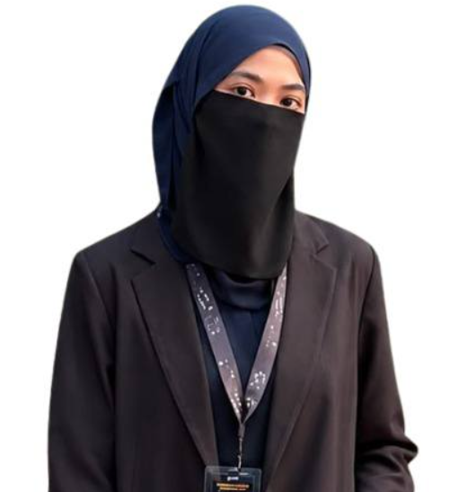

Profile Summary
Final-year Linguistics and Information Technology student at UUM with a strong foundation in IT, problem-solving and communication skills. Experienced in academic projects and programme management.
PERSONAL RESUME
Bachelor of Linguistics and Information Technology
Universiti Utara Malaysia (UUM)
Position to Apply: Internship
Final-year student with a foundation in information technology, problem-solving and communication. Seeking an internship from 8 March to 8 July 2027.
Get in touch
01 / BACKGROUND
Final-year Linguistics and Information Technology student at UUM with a strong foundation in IT, problem-solving and communication skills. Experienced in academic projects and programme management.
Universiti Utara Malaysia (UUM)
October 2023 – July 2027 · Current CGPA: 3.61CGPA: 3.67 · July 2021 – April 2023
MUET: Band 3.5 (2022)02 / EXPERIENCE
Granny Palace
Assisted with daily operations and creative design tasks.
Bahulu Ramlah & Zul
Handled customer service, product management and sales support.
03 / SELECTED WORK
A platform providing employment opportunities and community support for persons with disabilities.
Developed a website that identifies users' suitable colour tones and recommends matching colours.
Developed an online dictionary for Malaysian Sign Language.
04 / LEADERSHIP
05 / PROGRAMMES
Led programme planning, coordination and execution of a heritage hiking event in collaboration with Perlis Geopark and Kota Kayang Museum.
Led event planning and coordination for an Aidilfitri celebration programme.
Assisted in coordinating an educational language exploration programme involving DBP and Universiti Malaya.
Supported programme management and coordination of nature-based activities.
06 / SKILLS
Java, Python, Prolog
Visual Studio Code, JGrasp, NetBeans, IntelliJ IDEA, GitHub
Postman, Docker
Canva, Figma
TagAnt, Apify, Octoparse
Microsoft Word, Microsoft Excel
07 / ACHIEVEMENTS
08 / PROFESSIONAL REFERENCE
Lecturer, Linguistics and Information Technology
Universiti Utara Malaysia (UUM)
Contact: 012-7159194
Email: din@uum.edu.my